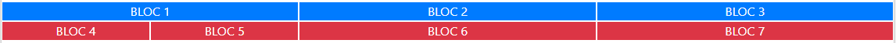
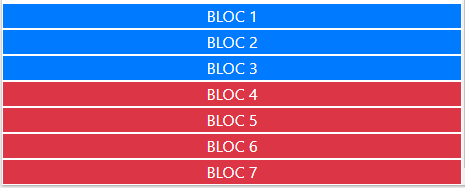
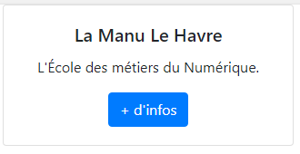
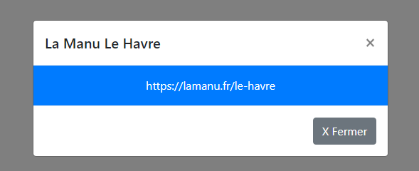

<!DOCTYPE html>
<html lang="fr">

<head>
	<!-- Required meta tags -->
	<meta charset="utf-8" />
	<meta name="viewport" content="width=device-width, initial-scale=1" />
	<!-- Bootstrap CSS -->
	<link href="https://cdn.jsdelivr.net/npm/bootstrap@5.0.0-beta1/dist/css/bootstrap.min.css" rel="stylesheet"
		integrity="sha384-giJF6kkoqNQ00vy+HMDP7azOuL0xtbfIcaT9wjKHr8RbDVddVHyTfAAsrekwKmP1" crossorigin="anonymous" />
	<link rel="stylesheet" href="../VBRepertoire_exos/assets/styleSections.css">

	<title>Exos Bootstrap / La MANU</title>
</head>

<body id="haut_de_page"></body>
<header>
	<br />
	<h1>Exos Bootstrap avec La MANU</h1>
	<br />
	<p class="liensExosBS">
		<a href="#Exo_1">Exo_1</a> /
		<a href="#Exo_2">Exo_2</a> /
		<a href="#Exo_3">Exo_3</a> /
		<a href="#Exo_4">Exo_4</a> /
		<a href="Exo_Foot_Le_HAC/Enavantlehac.html">Exo Bootstrap: Le Hac</a>
	</p>
	<br />
</header>
<!--  Exercice 1 -->
<div id="Exo_1" class="container p-5 my-3 bg-light text-dark border ">
	<div class="row text-black-50">
		<div class="col-12">
			Exercice 1: Reproduire l'image :
			
			<hr />
		</div>
	</div>
	<span class="result">Résultat Exo 1: </span>
	<div class="row text-center text-white border border-dark p-0">
		<!-- penser à enlever le padding du row !!! -->
		<div class="col-4 bg-info border border-white">BLOC 1</div>
		<div class="col-4 bg-info border border-white">BLOC 2</div>
		<div class="col-4 bg-info border border-white">BLOC 3</div>
	</div>
</div>

<!--  Exercice 2  -->
<div id="Exo_2" class="container p-5 my-3 bg-light text-dark border">
	<div class="row">
		<div class="col text-black-50">
			Exercice 2: Reproduire l'image :
			
			ATTENTION : Faire en sorte que sur petit écran, les blocs occupent
			tout l'écran et s'alignent verticalement :<br />
			
			<hr />
		</div>
	</div>
	<span class="result">Résultat Exo 2: </span>
	<div class=" row border border-dark p-0">
		<div class="col">
			<div class="row bg-info text-center text-white p-0">
				<div class="col-12 col-md-4 border border-white">BLOC 1</div>
				<div class="col-12 col-md-4 border border-white">BLOC 2</div>
				<div class="col-12 col-md-4 border border-white">BLOC 3</div>
			</div>

			<div class="row bg-danger text-center text-white p-0">
				<div class="col-12 col-md-2 border border-white">BLOC 4</div>
				<div class="col-12 col-md-2 border border-white">BLOC 5</div>
				<div class="col-12 col-md-4 border border-white">BLOC 6</div>
				<div class="col-12 col-md-4 border border-white">BLOC 7</div>
			</div>
		</div>
	</div>
</div>

<!--  Exercice 3  -->
<div id="Exo_3" class="container p-5 my-3 bg-light text-dark border ">
	<div class="row ">
		<div class="col text-black-50">
			Exercice 3: Reproduire l'image. ATTENTION : Faire en sorte de centrer
			le texte 
			<hr />
		</div>
	</div>
	<span class="result">Résultat Exo 3: </span>
	<div class="row bg-white text-center fw-bold text-dark">
		<div class="col-12 border border-white">Formations by "La Manu" <br />
			<button class="btn btn-primary fw-bold text-white btn_mini">C#</button>
			<a href="#" class="btn btn-primary fw-bold text-white  btn_mini" title="xxx">.NET</a>
			<!--voir badge  -->
		</div>
	</div>
</div>

<!--  Exercice 4  -->
<div id="Exo_4" class="container p-5 my-3 bg-light text-dark border ">
	<div class="row ">
		<div class="col text-black-50">
			Exercice 4:
			Reproduire l'image.<br />
			- Faire une card avec un bouton.<br />
			- Le bouton "+ d'infos" permettra d'ouvrir une fenêtre modale (image 2)<br />
			
			
			<hr />
		</div>
	</div>
	<span class="result">Résultat Exo 4: </span>
	<div class="row text-center text-dark">
		<div class="col-12 "> <br />
			<div class="card">
				<div class="card-body">
					<h5 class="card-title ">La Manu Le Havre</h5>
					<p class="card-text">L'école des métiers du numérique</p>
					<!-- <a href="#infos" data-toggle="modal" class="btn btn-primary text-white py-0 px-1 fs-6 stretched-link" title="+ d'info">+ d'info</a> -->
					<button type="button" data-bs-toggle="modal" data-bs-target="#infos" class="btn btn-primary ">+
						d'info</button>

					<!-- Tips:  Si vous ne désirez a sque l'écran parent se grise àl'ouveture de la fenêtre, ,il faut utiliser l’attribut data-backdrop="false" dans le code du bouton déclencheur :-->

				</div>
			</div>
		</div>
	</div> <!-- fin class row-->
	<!--   fenetre modale liée à <a> ou  par <button> par son id -->

	<div class="modal fade" id="infos" tabindex="-1" role="dialog" aria-labelledby="exampleModalLabel" aria-hidden="true">
		<div class="modal-dialog" modal-dialog-centered">
			<div class="modal-content">
				<!-- Contenu de la fenêtre modale  -->
				<div class="modal-header">
					<h5 class="modal-title">La Manu Le Havre </h5>
					<button type="button" class="btn-close" data-bs-dismiss="modal"></button>
				</div>
				<div class="modal-body bg-primary text-center text-white "> https://lamanu.fr/le-havre
				</div>
				<div class="modal-footer">
					<button type="button" class="btn btn-secondary" data-bs-dismiss="modal">Fermer</button>

				</div>
			</div>
		</div>
	</div> <!-- fin du modal fade   -->

</div> <!--  fin id exo 4 --->


<br>
<a href="JavaScript:window.close()">Close</a>
<!-- 	<a href="javascript:history.go(-1)">Retour</a> -->

<!--  infos de base (à actualiser pour BS.5) pour exo 4 sur  
								:https://laravel.sillo.org/bootstrap-4-fenetre-modale-modal/-->
<!--  TIPS: pour une fenêtre plus grande ou plus étroite avec les deux classes :
.modal-lg : pour une fenêtre large et .modal-sm : pour une fenêtre étroite
Ces classes complètent la classe modal-dialog. -->
<!-- TIPS: Animation pour faire apparaître la fenêtre avec un mouvement fluide. 
	Il suffit d’ajouter la classe .fade à la classe .modal.-->
<!-- voir: Activation avec Javascript-->
<!--  Voir : Un formulaire dans la fenêtre modale-->


<!-- Required JavaScript Option 1: Bootstrap Bundle with Popper -->
<script src="https://cdn.jsdelivr.net/npm/bootstrap@5.0.0-beta1/dist/js/bootstrap.bundle.min.js"
	integrity="sha384-ygbV9kiqUc6oa4msXn9868pTtWMgiQaeYH7/t7LECLbyPA2x65Kgf80OJFdroafW" crossorigin="anonymous"></script>
</body>

</html>